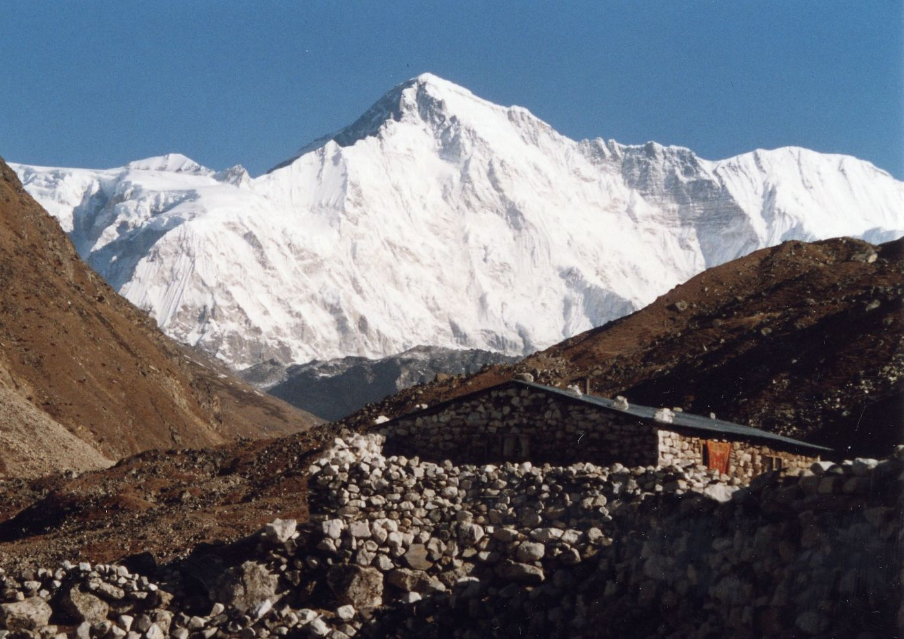

Annapurna

El macizo del Annapurna posee una longitud de 55 km,el Annapurna I fue el primer ochomil en ser escalado.El ascenso a su cumbre se convirtió en el mayor récord mundial de altitud en una cima obtenido por el ser humano durante tres años, hasta el ascenso posterior al Everest.El Annapurna I tenía la mayor tasa de mortalidad de los catorce ochomiles hasta marzo de 2012. Durante todo ese período, contabilizando desde 1950, ha habido 52 muertes durante los ascensos, 191 ascensiones exitosas y nueve muertes durante los descensos, lo cual significa, como bien se ha dicho, que "por cada dos alpinistas ávidos de emociones que escalan de manera segura hacia arriba y abajo el Annapurna, otro de ellos muere intentándolo."La cara Sur del Annapurna fue escalada por primera vez en 1970 por Don Whillans y Dougal Haston, miembros de una expedición británica liderada por Chris Bonington, que incluía al alpinista Ian Clough, que murió durante el descenso por el desprendimiento de un bloque de seracs.
 Inicio
Inicio
 Everest
Everest
 Daulaghiri
Daulaghiri
 Gasherbrum
Gasherbrum
 k2
k2
 BroadPeak
BroadPeak
Cho-Oyu
 GasherbrumII
GasherbrumII
 Kanchenjunga
Kanchenjunga
 Lhotsel
Lhotsel
 Makalu
Makalu
 Manaslu I
Manaslu I
 Nangaparbat
Nangaparbat
 ShishaPangma
ShishaPangma